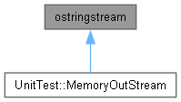

Rubik's Cube Simulator
1.0
Toggle main menu visibility
Загрузка...
Поиск...
Не найдено
Класс ostringstream
Граф наследования:ostringstream:

[
см. легенду
]
Объявления и описания членов класса находятся в файле:
D:/first_lab_ppois_rubick/unittest-cpp/UnitTest++/
MemoryOutStream.h
ostringstream
Создано системой
1.18.0
 1.18.0
1.18.0